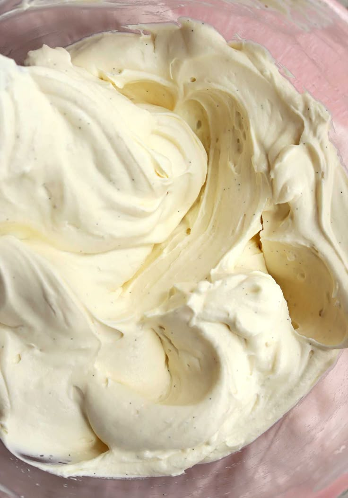

Jak upéct dort
Úvod
Ingredience
Postup
Dekorace
Ingredience
Před začátkem přípravy dortu si připravte následující ingredience
2 hrnky hladké mouky.
1 hrnek cukr.
1/2 hrnku másla.
3 vejce.
1 prášek do pečiva
1/2 hrnku mléka
